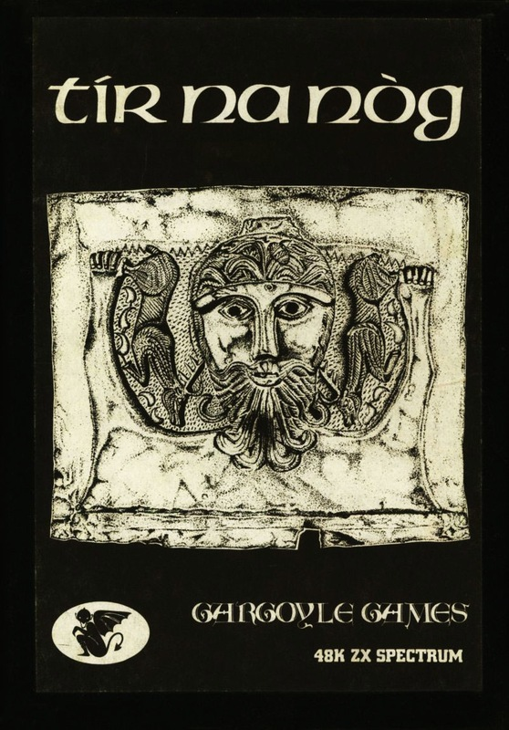
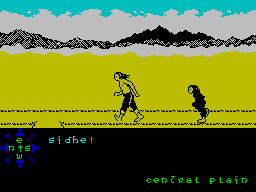
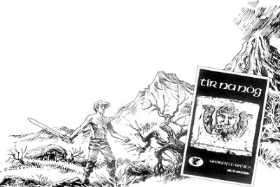

Tir Na Nog


{kind=link}

| Publisher: | Gargoyle Games |
| Price: | £9.95 |
| Year: | 1984 |
| Source: | CRASH, Issue 11 |

Our recent preview of the new graphical adventure Tir Na Nog, which loosely translated means Land of Youth from Gargoyle Games, whose first game Ad Astra caused such a stir with its graphics, seems to have already aroused a lot of interest. Tir Na Nog is one of those games that is a review team’s nightmare! There is such a lot of it to get through in a shortish space of time that it is inevitable we can only give a hint of the flavour.
Tir Na Nog is set in a mythical Celtic world peopled by the Sidhe. Once mighty, now fallen on hard times, these monkey-like creatures are the main protagonists in the adventure. They had bound the Great Enemy by creating the Seal of Calum, and thus had become a great civilisation. But the Great Enemy had managed to steal the Seal by sending a thief. In their rage the Sidhe killed the thief but the Seal was shattered into four pieces and the Great Enemy freed to wreak havoc on the Earth again. So fell the Sidhe into sub-human beasts.

behind Cuchulainn
When the game opens, it is a new, darker age. You play Cuchulainn, the Hound of Heaven, a mighty warrior who has been called to reunite the four pieces of the Seal of Calum and thus defeat the Great Enemy. In this respect Tir Na Nog is definitely an adventure. You are required to explore, seek useful objects such as weapons and keys (some of whose uses are immediately apparent, and some are not), and interact with the other characters who inhabit the land. But it is not a text orientated adventure — text only plays a part in telling you where you are and what objects you are carrying, although occasionally there are situations where text will appear, such as the Oracle. There are puzzles to solve (the Oracle’s obscure pronouncements are such), and there are many arcade situations where quick reactions are needed to stay alive.
The screen is split roughly into two sections — a top playing area, where the land is seen, and a lower information area which tells you where you are, what you are carrying or using, and most importantly, a compass. The hero Cuchulainn moves left and right, but the scene may be viewed from four ‘camera’ positions which relate to the changing compass below.
Tir Na Nog comes in a large cardboard box which contains a 28 page booklet and a full colour map of the land. The booklet has playing instructions, a history of the land and playing tips contained very neatly within a supposed Sealltuinn, or ‘observations’ of a Bard of the Sidhe. The game may be saved at any point (to avoid constant death!) and reloaded.
CRITICISM

‘What we have here is a game that desperately needs careful mapping by the player! The map provided is very useful in giving the general layout of the land, but as the booklet says, ‘So many doors are there in Tir Na Nog that it has often been called the Land of Opportunity, because of the number of openings that exist.’ And there are hundreds of pathways. Because of the 3D world the program creates, but which you only really see in two dimensions at any time, it can get very confusing at first! The first time player would be well advised to ensure that he or she doesn’t lose a life right outside the altar cave and so drop the axe picked up just inside, because a Sidhe prowls around on that path and makes it a hard job on a next life to get the axe back. And that’s an important point — as in Avalon, objects used or dropped remain where they are, you affect the land every time you play and things are not reset to ‘start’. The graphics are extremely good. Cuchulainn walks and fights with tremendous vigour. It’s marvellous animation. The adventure quests are numerous and this game is going to take a long time to get through, which makes it good value for money, and a must for adventurers and arcade players alike.’
‘Tir Na Nog requires the skills of adventure, strategy and arcade. Some of the creatures you just have to fight, and what with orienting yourself and moving, it can be quite a skill. But some are in possession of things you need, and you may have something they want, so strategical thinking and forward planning comes in as well. Colour has been well used so there are no attribute problems to spoil the look of it. All the animated characters are masked on the backgrounds, so they look realistic and can be easily seen. The sidhe are very good, but a damned nuisance! I have barely scraped the surface of this marvellous looking game, but as far as I have got, it is playable, fun and (not usually the case with an adventure) very addictive.’
‘I didn’t get to see the preview copy of Tir Na Nog earlier but I had heard about it, and was looking forward to seeing it. Then I saw The Legend of Avalon and wondered whether Tir Na Nog wasn’t going to be very similar. Well they are not at all alike, visually or in the playing, beyond the fact that in both games you do have to be able to think and move very quickly at times in what is a vast playing area. I like the idea in Tir Na Nog that access to the many major ‘above’ and ‘below’ ground places is done by way of caves which lead you from one place to the other. This game is also one of those that requires a lot of exploring and familiarising before you have a hope of getting onto the quests. Fortunately, the exploring itself is fun and there is a lot to see. I just wonder whether there isn’t too much walking about to do? I feel sure that Tir Na Nog is going to appeal widely because of the different things in it, and it’s going to take a long time to get right through it and destroy the Great Enemy.’
COMMENTS
| Control keys: | Corner keys for thrust, alternate bottom row for left/right, alternate second row for changing ‘camera’ view, alternate third row for pick up/drop |
| Joystick: | None, but a programmable interface might prove useful here |
| Keyboard play: | Responsive — takes getting used to keys and views |
| Use of colour: | Black drawings on simple colour grounds, works well and looks fresh |
| Graphics: | Excellent animation, using many frames, large characters and smooth scrolling effects |
| Sound: | Not much, mostly warning beeps |
| Skill levels: | 1 |
| Lives: | 1, but the game constantly returns you to the start position, with effects of last life intact |
| Screens: | Continuous scrolling |
| Special features: | Map of Tir Na Nog |
| General rating: | A sophisticated looking and playing game with masses of content, good value for money, generally excellent. |
| Use of computer: | 82% |
| Graphics: | 98% |
| Playability: | 93% |
| Getting started: | 95% |
| Addictive qualities: | 90% |
| Value for money: | 91% |
| Overall: | 92% |